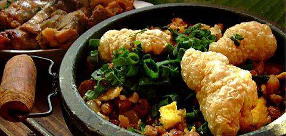
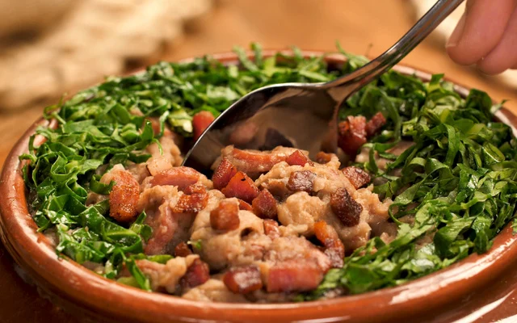

A tradicional e deliciosa comida mineira
Escrito por Tiradentes.net

Em Tiradentes pode-se encontrar a autêntica comida mineira. A culinária local preza os pratos tradicionais como:
- feijão tropeiro
- tutu mineiro

- frango a molho pardo

- frango com “ora pro nobis” (erva trepadeira com grande teor nutritivo)